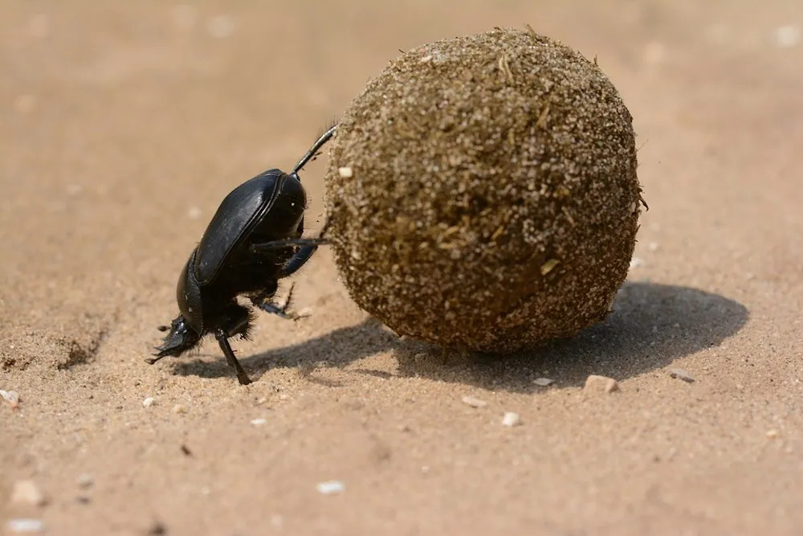
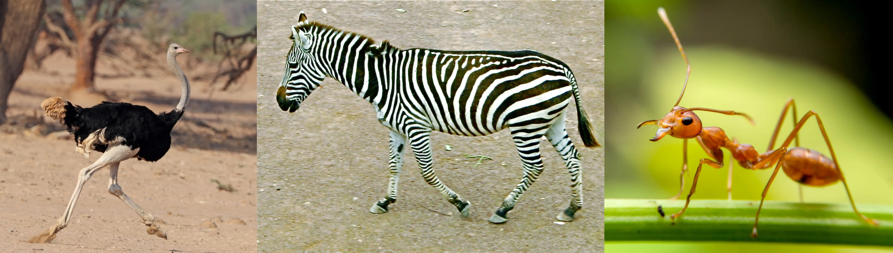
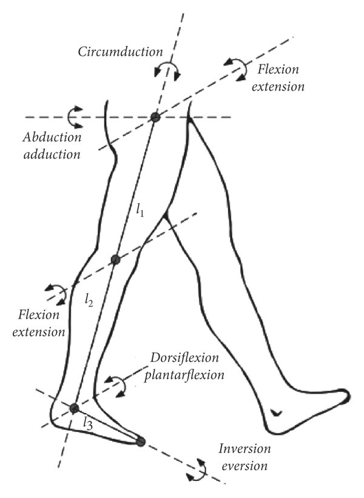
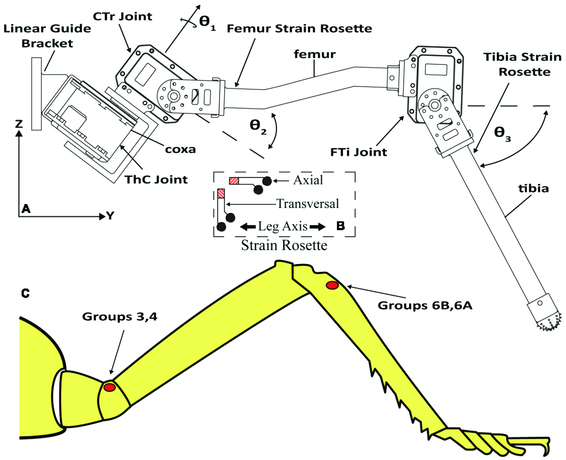
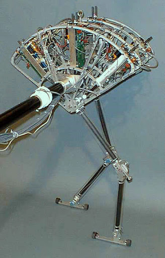

Legged [5] ¶ 
The main disadvantages of legged locomotion include power and mechanical complexity. The leg, which may include several DoFDegrees of FreedomDegrees of Freedom, must be capable of sustaining part of the robot’s total weight, and in many robots must be capable of lifting and lowering the robot. Additionally, high manoeuvrability will only be achieved if the legs have a sufficient number of DoFDegrees of FreedomDegrees of Freedom to impart forces in a number of different directions.
Leg Configurations and Stability
Because legged robots are biologically inspired, it is instructive to examine biologically successful legged systems. A number of different leg configurations have been successful in a variety or organisms seen in Fig. 1.5.

Large animals such as mammals and reptiles have four (4) legs whereas insects have six (6) or more legs. In some mammals, the ability to walk on only two (2) legs has been perfected. Especially in the case of humans, balance has progressed to the point that we can even jump with one leg [6] In child development, one of the tests used to determine if the child is acquiring advanced locomotion skills is the ability to jump on one leg [†-6] Song, Z. et al. The Impact of Exercise Play on the Biomechanical Characteristics of Single-Leg Jumping in 5-to 6-Year-Old Preschool Children. Sensors 25, 422 (2025)..
This exceptional manoeuvrability comes at a price:
Bipedal motion requires complex active control to maintain balance.
In contrast, a creature with three (3) legs can exhibit a static, stable pose provided that it can ensure that its centre of gravity is within the tripod of ground contact. Static stability, demonstrated by a three-legged stool, means that balance is maintained with no need for motion. A small deviation from stability [7] e.g., such as gently pushing the stool is passively corrected towards the stable pose when the upsetting force stops. But a robot must be able to lift its legs in order to walk. To achieve static walking, a robot must have at least six (6) legs [†-7] Böttcher, S. Principles of robot locomotion in Proceedings of human robot interaction seminar (2006). In such a configuration, it is possible to design a gait [8] the pattern of steps of an animal at a particular speed. in which a statically stable tripod of legs is in contact with the ground at all times.
Insects [9] such as spiders, ant, beetles, … are immediately able to walk when born. For them, the problem of balance during walking is relatively simple. Mammals, with four (4) legs, cannot achieve static walking, but are able to stand easily on four (4) legs. Fauns [10] a baby deer, for example, spend several minutes attempting to stand before they are able to do so, then spend several more minutes learning to walk without falling [†-8] Krzywinski, A., Niedbalska, A. & Twardowski, L. Growth and development of hand reared fallow deer fawns. Acta theriologica 29, 349–356 (1984). Humans, with two (2) legs, cannot even stand in one place with static stability. Infants require months to stand and walk, and even longer to learn to jump, run and stand on one leg.

There is also the potential for great variety in the complexity of each individual leg. Once again, the biological world provides ample examples at both extremes. For instance, in the case of the caterpillar, each leg is extended using hydraulic pressure by constricting the body cavity and forcing an increase in pressure, and each leg is retracted longitudinally by relaxing the hydraulic pressure, then activating a single tensile muscle that pulls the leg in towards the body, seen in Fig. 1.6.
Each leg has only a single DoFDegrees of FreedomDegrees of Freedom, which is oriented longitudinally
along the leg. Forward locomotion depends on the hydraulic pressure in the body, which extends the
distance between pairs of legs. The caterpillar leg is therefore mechanically very simple, using a
minimal number of extrinsic muscles to achieve complex overall locomotion.
At the other extreme, the human leg has more than six (6) major degrees of freedom, combined with
further actuation at the toes. [11] ¶ 

In the case of legged AMRAutonomous Mobile RoboticsSelf-navigating machines moving materials and goods independently without fixed tracks or wires. They use smart software, cameras, and sensors to map spaces and safely steer around people or obstacles in real time., a minimum of two (2) DoFDegrees of FreedomDegrees of Freedom is generally required to move a leg forward by lifting the left and swinging it forward. More common is the addition of a DoFDegrees of FreedomDegrees of Freedom for more complex manoeuvres, resulting in legs such as those shown in Fig. 1.7. Recent successes in the creation of bipedal walking robots have added a fourth DoFDegrees of FreedomDegrees of Freedom at the ankle joint [†-13] Lee, H. & Hogan, N. Investigation of human ankle mechanical impedance during locomotion using a wearable ankle robot in 2013 IEEE International Conference on Robotics and Automation (2013), 2651–2656. The ankle enables more consistent ground contact by actuating the pose of the sole of the foot. In general, adding DoFDegrees of FreedomDegrees of Freedom to a robot leg increases the manoeuvrability of the robot, both augmenting the range of terrains on which it can travel and the ability of the robot to travel with a variety of gaits. The primary disadvantages of additional joints and actuators is, of course, energy, control and mass. Additional actuators require energy and control, and they also add to leg mass, further increasing power and load requirements on existing actuators.
In the case of a multi-legged AMRAutonomous Mobile RoboticsSelf-navigating machines moving materials and goods independently without fixed tracks or wires. They use smart software, cameras, and sensors to map spaces and safely steer around people or obstacles in real time., there is the issue of leg coordination for locomotion, or gait control.
The number of possible gaits depends on the number of legs [†-14] Alexander, R. M. Optimization and gaits in the locomotion of vertebrates. Physiological reviews 69, 1199–1227 (1989).
The gait is a sequence of lift and release events for the individual legs. For a mobile robot with legs, the total number of possible events for a walking machine is:
| (1.1) |
For a bipedal walker (=2) legs the number of possible events is:
| (1.2) |
The six (6) different events are:
-
lift right leg
-
lift left leg
-
release right leg
-
release left leg
-
lift both legs together
-
release both legs together
As can we see, this list of possible events quickly grows quite large. For example, a robot with six (6) legs has far more gaits theoretically:
| (1.3) |
Although there are no high-volume industrial applications to date, legged locomotion is an important area of long-term research. Several interesting designs are presented below, beginning with the one-legged robot and finishing with six-legged robots.
Single Leg

The minimum number of legs a legged robot can have is, of course, one. Minimising the number of legs is beneficial for several reasons.
-
Body mass is particularly important to walking machines, and the single leg minimizes cumulative leg mass.
-
Leg coordination is required when a robot has several legs, but with one leg no such coordination is needed.
-
The one-legged robot maximises the basic advantage of legged locomotion: legs have single points of contact with the ground in lieu of an entire track as with wheels.
A single legged robot requires only a sequence of single contacts, making it useful in rough terrain.
Perhaps most importantly, a hopping robot can dynamically cross a gap that is larger than its stride by taking a running start, whereas a multi-legged walking robot that cannot run is limited to crossing gaps that are as large as its reach.
The major challenge of creating a single-leg robot is balance. For a robot with one leg, static walking is not only impossible, but static stability when stationary is also impossible. The robot must actively balance itself by either changing its centre of gravity or by imparting corrective forces.
Thus, the successful single-leg robot must be dynamically stable.
Fig. 1.8 shows the Raibert Hopper [†-16] Murthy, S. S. & Raibert, M. H. 3D balance in legged locomotion: modeling and simulation for the one-legged case. ACM SIGGRAPH Computer Graphics 18, 27–27 (1984), Raibert, M. H., Brown Jr, H. B. & Chepponis, M. Experiments in balance with a 3D one-legged hopping machine. The International Journal of Robotics Research 3, 75–92 (1984), one of the most well-known single-leg hopping robots created.
This robot makes continuous corrections to body attitude and to robot velocity by adjusting the leg angle with respect to the body. The actuation is hydraulic, including high-power longitudinal extension of the leg during stance to hop back into the air.

Although powerful, these actuators require a large, off-board hydraulic pump to be connected to the robot at all times. Fig. 1.9 shows a more energy efficient design developed [†-17] Brown, B. & Zeglin, G. The bow leg hopping robot in Proceedings. 1998 IEEE International Conference on Robotics and Automation (Cat. No. 98CH36146) 1 (1998), 781–786. Instead of supplying power by means of an off-board hydraulic pump, the Bow Leg Hopper is designed to capture the kinetic energy of the robot as it lands using an efficient bow spring leg. This spring returns approximately 85% of the energy, meaning that stable hopping requires only the addition of 15% of the required energy on each hop. This robot, which is constrained along one axis by a boom, has demonstrated continuous hopping for 20 minutes using a single set of batteries carried on board the robot.
As with the Raibert Hopper, the Bow Leg Hopper controls velocity by changing the angle of the leg to the body at the hip joint. The paper [†-18] Ringrose, R. Self-stabilizing running in Proceedings of International Conference on Robotics and Automation 1 (1997), 487–493 demonstrates the very important duality of mechanics and controls as applied to a single leg hopping machine. Often clever mechanical design can perform the same operations as complex active control circuitry.
In this robot, the physical shape of the foot is exactly the right curve so that when the robot lands without being perfectly vertical, the proper corrective force is provided from the impact, making the robot vertical by the next landing. This robot is dynamically stable, and is furthermore passive.
The correction is provided by physical interactions between the robot and its environment, with no computer nor any active control in the loop.
Two Legs (Bipedal)
A variety of successful bipedal robots have been demonstrated. Two-legged robots have been shown to
run, jump, travel up and down stairs and even do aerial tricks such as somersaults. The Honda P2
bipedal robot, [12] ¶ [12]The New ASIMO introduced in 2005 [†-19] Citizendium. Asimo 2005. which is the
product of tens of millions of research dollars and more than a decade of work. This biped can
walk on slopes, climb and descend stairs, and push shopping carts. The crucial technology
that enables this robot is Honda’s research into the fabrication of extremely high torque,
low mass motors that serve as the robot’s joints. In the case of P2, the most significant
obstacle that remains is energy capacity, efficiency and autonomous navigation. This robot can
operate for only about 20 minutes with on-board power. An important feature of bipedal
robots is their anthropomorphic shape. They can be built to have the same approximate
dimensions as humans, and this makes them excellent vehicles for research in human-robot
interaction.
[12]The New ASIMO introduced in 2005 [†-19] Citizendium. Asimo 2005. which is the
product of tens of millions of research dollars and more than a decade of work. This biped can
walk on slopes, climb and descend stairs, and push shopping carts. The crucial technology
that enables this robot is Honda’s research into the fabrication of extremely high torque,
low mass motors that serve as the robot’s joints. In the case of P2, the most significant
obstacle that remains is energy capacity, efficiency and autonomous navigation. This robot can
operate for only about 20 minutes with on-board power. An important feature of bipedal
robots is their anthropomorphic shape. They can be built to have the same approximate
dimensions as humans, and this makes them excellent vehicles for research in human-robot
interaction.
Bipedal robots can only be statically stable within some limits, and so robots such as P2 and Wabian
generally must perform continuous balance-correcting servoing even when standing still. Furthermore,
each leg must have sufficient capacity to support the full weight of the robot. In the case of
four-legged robots, the balance problem is facilitated along with the load requirements of
each leg. An elegant design of a biped robot is the Spring Flamingo of MIT. [13] ¶ 
Four Legs (Quadruped)
Although standing still on four legs is passively stable, walking remains challenging because to remain stable the robot’s center of gravity must be actively shifted during the gait.
Four legged robots have the potential to serve as effective artifacts for research in human-robot
interaction. [14] ¶ [14]The four-legged canine-inspired Spot, weighing 25 kg (55 pounds), which was lighter
than their other products. Spot was designed to travel over terrain or environments that were
previously difficult for other robots. Humans can treat the quadruped robots, for example,
as a pet and might develop an emotional relationship similar to that between man and
dog.
[14]The four-legged canine-inspired Spot, weighing 25 kg (55 pounds), which was lighter
than their other products. Spot was designed to travel over terrain or environments that were
previously difficult for other robots. Humans can treat the quadruped robots, for example,
as a pet and might develop an emotional relationship similar to that between man and
dog.
As the challenges of high energy storage and motor technology are solved, it is likely that quadruped robots much more capable will become common throughout the human environment.
Six Legs (Hexapod)
Six legged configurations have been extremely popular in AMRAutonomous Mobile RoboticsSelf-navigating machines moving materials and goods independently without fixed tracks or wires. They use smart software, cameras, and sensors to map spaces and safely steer around people or obstacles in real time. due to their static stability during walking, therefore reducing the control complexity. For most cases, each leg has 3 DoFDegrees of FreedomDegrees of Freedom, including hip flexion, knee flexion and hip abduction.

Genghis is a commercially available hobby robot which has six legs, each of which has 2 DoFDegrees of FreedomDegrees of Freedom provided by hobby servos, shown in Fig. 1.10. Such a robot, which consists only of hip flexion and hip abduction, has less maneuverability in rough terrain but performs quite well on flat ground. Because it consists of a straightforward arrangement of servo motors and straight legs, such robots can be readily built by a robot hobbyist. Insects, which are arguably the most successful locomoting creatures on earth, excel at traversing all forms of terrain with six legs, even upside down.
Currently, the gap between the capabilities of six-legged insects and artificial six-legged robots is still quite large. Interestingly, this is not due to a lack of sufficient numbers of degrees of freedom on the robots. Rather, insects combine a small number of active DoFDegrees of FreedomDegrees of Freedom with passive structures, such as microscopic barbs and textured pads, that increase the gripping strength of each leg significantly.
Final Remarks It is clear from the above examples that legged robots have much progress to make before they are competitive with their biological equivalents. Nevertheless, significant gains have been realized recently, primarily due to advances in motor design.
Creating actuation systems that approach the efficiency of animal muscles remains far from the reach of robotics, as does energy storage with the energy densities found in organic life forms.
-
¶
- AMRAutonomous Mobile Robotics
Self-navigating machines moving materials and goods independently without fixed tracks or wires. They use smart software, cameras, and sensors to map spaces and safely steer around people or obstacles in real time.
-
¶
- DoFDegrees of Freedom
Degrees of Freedom
- 1.
- Thor, M. et al. A dung beetle-inspired robotic model and its distributed sensor-driven control for walking and ball rolling. Artificial Life and Robotics 23, 435–443 (2018)
- 2.
- R. Jones, Z. P. S. All Praise The Humble Dung Beetle 2018
- 3.
- Photography, S. Common ostrich (Struthio camelus australis) male running (composite image), Damaraland, Namibia 2018
- 4.
- Porges. Zebra in Wellington Zoo 2025
- 5.
- Brittanica, E. Ant 2025
- 6.
- Song, Z. et al. The Impact of Exercise Play on the Biomechanical Characteristics of Single-Leg Jumping in 5-to 6-Year-Old Preschool Children. Sensors 25, 422 (2025)
- 7.
- Böttcher, S. Principles of robot locomotion in Proceedings of human robot interaction seminar (2006)
- 8.
- Krzywinski, A., Niedbalska, A. & Twardowski, L. Growth and development of hand reared fallow deer fawns. Acta theriologica 29, 349–356 (1984)
- 9.
- Brackenbury, J. Caterpillar kinematics. Nature 390, 453–453 (1997)
- 10.
- Pons, J. L. Wearable robots: biomechatronic exoskeletons (John Wiley & Sons, 2008)
- 11.
- Winter, D. A. Biomechanics and motor control of human gait: normal, elderly and pathological (1991), Lacquaniti, F., Ivanenko, Y. P. & Zago, M. Patterned control of human locomotion. The Journal of physiology 590, 2189–2199 (2012)
- 12.
- Zyhowski, W. P., Zill, S. N. & Szczecinski, N. S. Adaptive load feedback robustly signals force dynamics in robotic model of Carausius morosus stepping. Frontiers in Neurorobotics 17, 1125171 (2023)
- 13.
- Lee, H. & Hogan, N. Investigation of human ankle mechanical impedance during locomotion using a wearable ankle robot in 2013 IEEE International Conference on Robotics and Automation (2013), 2651–2656
- 14.
- Alexander, R. M. Optimization and gaits in the locomotion of vertebrates. Physiological reviews 69, 1199–1227 (1989)
- 15.
- MIT. The Raibert Hopper 1984
- 16.
- Murthy, S. S. & Raibert, M. H. 3D balance in legged locomotion: modeling and simulation for the one-legged case. ACM SIGGRAPH Computer Graphics 18, 27–27 (1984), Raibert, M. H., Brown Jr, H. B. & Chepponis, M. Experiments in balance with a 3D one-legged hopping machine. The International Journal of Robotics Research 3, 75–92 (1984)
- 17.
- Brown, B. & Zeglin, G. The bow leg hopping robot in Proceedings. 1998 IEEE International Conference on Robotics and Automation (Cat. No. 98CH36146) 1 (1998), 781–786
- 18.
- Ringrose, R. Self-stabilizing running in Proceedings of International Conference on Robotics and Automation 1 (1997), 487–493
- 19.
- Citizendium. Asimo 2005
- 20.
- Flamingo. Spring Flamingo 2000
- [6].
- In child development, one of the tests used to determine if the child is acquiring advanced locomotion skills is the ability to jump on one leg [†-6] Song, Z. et al. The Impact of Exercise Play on the Biomechanical Characteristics of Single-Leg Jumping in 5-to 6-Year-Old Preschool Children. Sensors 25, 422 (2025).
- [7].
- e.g., such as gently pushing the stool
- [8].
- the pattern of steps of an animal at a particular speed.
- [9].
- such as spiders, ant, beetles, …
- [10].
- a baby deer